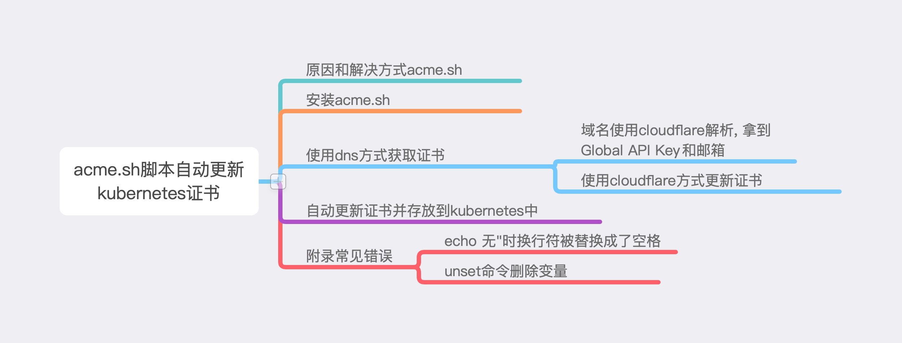

0. 原因letsencrypt获取的证书只有3个月有效期, 每次手动更新易出错也会忘记, 所以使用crontab定时acme.sh定时更新最好不过了.
放下文章结构

1. 安装acme.sh, acme.sh官网中文链接.
# 推荐使用root用户, 后续也以root用户操作的.
curl https://get.acme.sh | sh
2. 使用acme.sh的dns方式, 这里服务商以cloudflare为例.
域名使用cloudflare解析(注册cloudflare官方教程更换域名), 拿到Global API Key和邮箱.
-
# Global API Key和邮箱 export CF_Key="cloudflare设置中的Global API Key" export CF_Email="cloudflare注册邮箱" # 首次生成域名证书(\*号需要转译) /root/.acme.sh/acme.sh --issue --dns dns_cf -d \*.actiger.com TLSCRT=$(cat /root/.acme.sh/\*.actiger.com/\*.actiger.com.cer) TLSKEY=$(cat /root/.acme.sh/\*.actiger.com/\*.actiger.com.key) # base64转换 ACTIGER_TLSCRT=$(echo "${TLSCRT}"|base64 -w 10000) ACTIGER_TLSKEY=$(echo "${TLSKEY}"|base64 -w 10000) # 生成新的secret. FILE_ACTIGER="/root/kubernetes/pro-blog-cc6/ingress-secret.yml" cat << EOF | tee ${FILE_ACTIGER} apiVersion: v1 data: tls.crt: ${ACTIGER_TLSCRT} tls.key: ${ACTIGER_TLSKEY} kind: Secret metadata: name: ingress-secret namespace: nginx-space type: Opaque EOF # 生效 cd /root/kubernetes/pro-blog-cc6/ && kubectl apply -f ingress-secret.yml
3. 自动更新证书脚本.
vim /root/autoupdatecert.sh, 脚本内容.
/root/.acme.sh/acme.sh --cron
TLSCRT=$(cat /root/.acme.sh/\*.actiger.com/\*.actiger.com.cer)
TLSKEY=$(cat /root/.acme.sh/\*.actiger.com/\*.actiger.com.key)
ACTIGER_TLSCRT=$(echo "${TLSCRT}"|base64 -w 10000)
ACTIGER_TLSKEY=$(echo "${TLSKEY}"|base64 -w 10000)
# kubernetes中secret在该位置
FILE_ACTIGER="/root/kubernetes/pro-blog-cc6/ingress-secret.yml"
cat << EOF | tee ${FILE_ACTIGER}
apiVersion: v1
data:
tls.crt: ${ACTIGER_TLSCRT}
tls.key: ${ACTIGER_TLSKEY}
kind: Secret
metadata:
name: ingress-secret
namespace: nginx-space
type: Opaque
EOF
cd /root/kubernetes/pro-blog-cc6/ && kubectl apply -f ingress-secret.yml
4. 添加到定时任务中, 每月1号和15号尝试更新证书, 可参考crontab用法.
4.1 vim /root/root.cron
#进入脚本目录, 并执行更新证书脚本.
* * 1,15 * * cd /root/ && ./autoupdatecert.sh
4.2 添加上面定时任务
crontab -uroot /root/root.cron